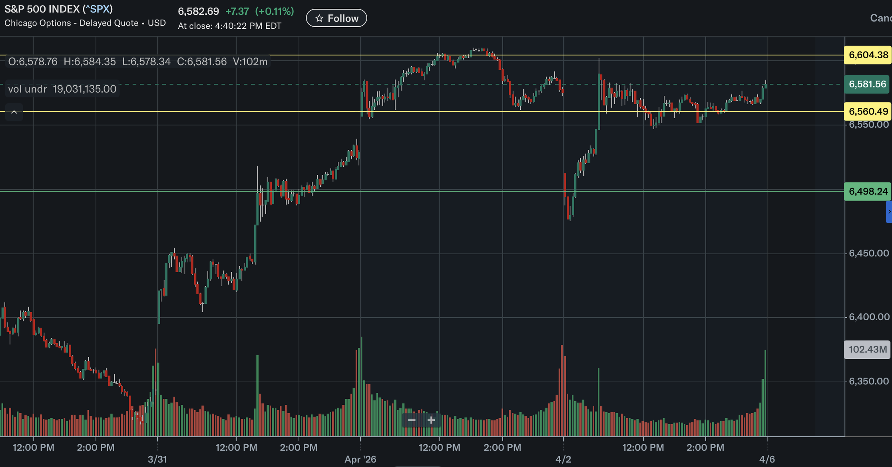
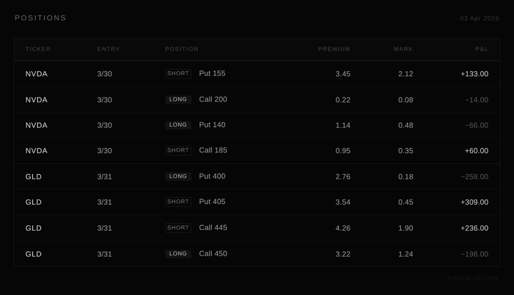
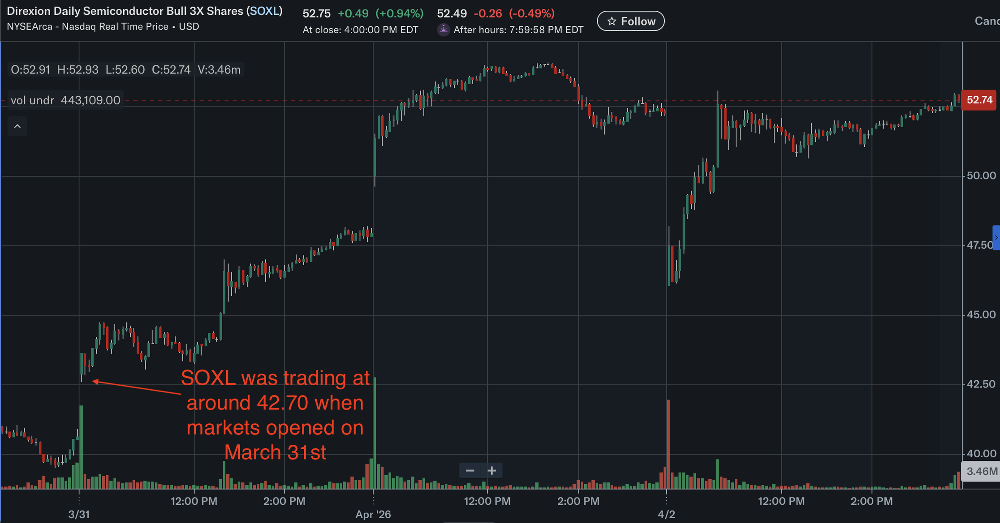

The Easter-shortened week only gave us four trading days, but volatility was anything but quiet.
Monday opened with a strong risk-on move as markets priced in the possibility of de-escalation in the Middle East. The S&P 500 rallied 2.91% and the Nasdaq 3.83%, both marking their largest single-day gains since May 2025. By Thursday, however, that narrative had already started to unravel. Trump’s shifting stance on Iran brought uncertainty back into focus, oil pushed toward $112, and intraday price action became significantly more unstable. By the end of the week, the S&P was up around 3.3%, but most of that gain came from Monday’s move.
From a structural standpoint, the market was fairly straightforward. The S&P spent the week oscillating within a 6500 - 6600 range. Attempts to break above 6600 consistently failed, while dips toward 6500 were met with strong buying. Volatility was elevated, but there was no sustained directional follow-through.
This is the kind of environment where traders tend to lose money - mistaking movement for trend. When price swings are large but direction is absent, chasing momentum typically leads to getting caught on both sides. In contrast, treating volatility itself as the tradable variable often produces a cleaner framework.

Iron Condors: Defining the Range
Both of our main trades this week were iron condors. This wasn’t directional, but simply that price would remain contained within a defined range over a given time horizon.
NVDA
The NVDA position was structured with short strikes at 155 (put) and 185 (call), with protection at 140 and 200, expiring April 24. The trade collected roughly 3.04 in premium, with breakevens around 152 and 188.
What makes Nvidia interesting right now is the tension in how it’s being priced. On one hand, it remains the centerpiece of the AI trade, with analysts still expecting 70%+ earnings growth this fiscal year. On the other hand, its forward P/E has compressed to roughly 19.6x, the lowest level since 2019 and even below the broader market.
We are not looking at deteriorating fundamentals, but a shift in how those fundamentals are being discounted. Macro uncertainty is weighing on valuation, while the AI growth narrative continues to support expectations. With both forces present, price has struggled to establish a clear direction.
Monday’s rally confirmed that bullish positioning is still there, but there hasn’t been a strong enough catalyst to push the stock into a higher range. In this kind of situation, directional trades offer limited edge. Defining a range and selling premium makes more sense.
GLD
The GLD position was structured similarly, with a 405 - 445 short range and protection at 400 and 450, expiring April 10. The trade collected about 1.82 in premium.
Gold has been another example of conflicting forces. The intuitive view is that geopolitical escalation should drive a clean rally, but in practice, the picture has been more nuanced.
Safe-haven demand is supporting prices, but at the same time, rising oil prices are feeding into inflation expectations and higher rates, which weigh on gold’s valuation. The result is a market that isn’t trending, but being pulled in both directions.
In that kind of environment, directional conviction becomes fragile. Range-based positioning is simply better aligned with how price is behaving.

A Lesson: SOXL Short Put
One trade this week stood out as a useful reminder.
Coming into the week, semiconductors had already pulled back and were starting to look constructive, so we opened a SOXL short put (strike 45, Apr 2 expiry) on March 25. The trade made sense at the time, but the move that followed wasn’t driven by sector fundamentals - it was a broader risk-off shift.
That distinction matters. In a macro-driven selloff, short puts are exposed on two fronts. As price declines, delta increases, adding directional risk. At the same time, implied volatility expands, creating additional pressure through vega. Losses compound across both dimensions.
With SOXL trading down toward 42, assignment risk became meaningful. When the market bounced on Wednesday, we chose to close the position rather than carry it into expiry.
Part of that decision was also tactical. Recently, we’ve seen a pattern where major macro developments tend to cluster toward the end of the week, especially Thursdays. Holding short-dated, volatility-sensitive positions into that window often doesn’t offer an attractive risk-reward relative to the remaining theta.

Takeaways
The biggest mistake this week wasn’t getting direction wrong; instead, it was about trying to force a directional view in a market that didn’t have one.
Range-based strategies work precisely because they acknowledge that uncertainty. When conviction is low, selling the market’s pricing of that uncertainty becomes a more coherent approach.
Of course, the trade-off is clear. Returns are capped, and tail risk remains. In a sharp move, gamma can expand quickly, and drawdowns can accelerate.
At a high level, this is a substitution: replacing directional risk with volatility risk.
Looking Ahead
The key variables remain unchanged:
Whether Middle East tensions genuinely de-escalate Whether oil-driven inflation expectations continue to rise
As long as those remain unresolved, markets are likely to stay in a high-volatility, low-trend regime.
In that environment, the more useful question isn’t where price goes next, but whether volatility itself is being mispriced.